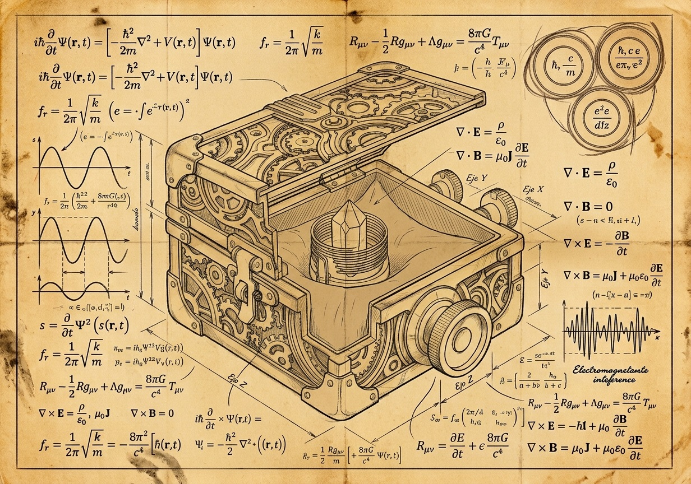

Registros recuperados del taller de Lionel y la memoria del brazalete

Introduce tu correo para guardar tu firma en los registros del Libro 3, descargar el esquema técnico original en alta resolución (PDF) y acceder a la Frecuencia Principal.